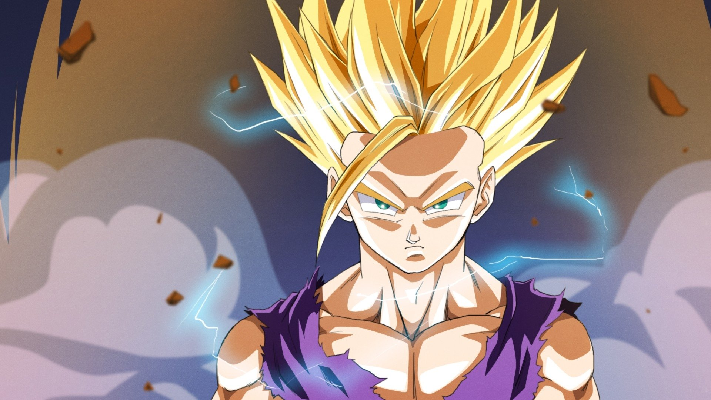

Kakarot or Goku is one of the heroes of the cartoon series Dragon Ball and is the strongest character in the series and has two sons Gohan and Goten and his stubborn friend Vegeta and is present in all parts of the series

Vegeta, one of the heroes of the cartoon series Dragon Ball, is a Saiyan, one of Kakarot's friends and does not want to admit it. He has a son and a daughter, Trunks and Paula, who is the first to go to the planet Beros
Trunks is the son of Vegeta and there are two future and the present and he can turn into a Super Saiyan and the future appeared twice in the arc of Android and Ciel and in the arc of Goku Black

Frieza, one of the villains in Dragon Ball, has six forms, and he is the tastiest enemy of Goku, who is the one who blew up the planet Vegeta and killed Goku and Vegeta's parents, and Goku and Vegeta took revenge on him when he grew up
Barduk is one of the Saianz, Goku's father, he was the first to fight the evil Friesa and he has another son named Raditz and he was killed by Friesa when the planet Vegeta was destroyed.
Piccolo was Goku's enemy, but after he defeated him and the Saianz attacked them, they became friends, and he trained Gohan,Goku's son, since he was young, and he became a strong fighter.
Gohan, Goku's eldest son, was the first to turn into Super Saiyan 2, and Piccolo had trained him since he was young, because he saw the strength he showed when they fought Raditz, he did great damage. When he grew up, he married the daughter of world champion Fidel, and he has a little girl named Pan.

Beros , the leader of the destruction of the seventh world, wanted to destroy the earth because he did not eat pudding and did not find the amazing Saiyans leader, but Goku gained the power of the amazing Saian leader andfought him, and Goku lost, but Perus did not destroy the Earth.

Whis is Daishunkan, assistant to the Seventh World Destruction leader Beros And his father is the great Daishinkan, assistant to the leader Zeno, and he was spared from doom in the Tournament of Universes.
Zeno is the leader of the 12 worlds, he can destroy everything in one moment, and he is Goku's friend and assistant, the great Daishunkan.

Black Goku, who is Kayo Zamasu, wants to achieve justice, so he killed his teacher, Gowasu, to steal the earrings, use the time ring, and collect Dragon Ball balls to replace his body with Goku's body, kill him, kill his family, and destroy the land to achieve his plan, but Trunks gathered the energies of people and eliminated Black and destroyed the leader Zeno the planet to get rid of them, so he killed them both.